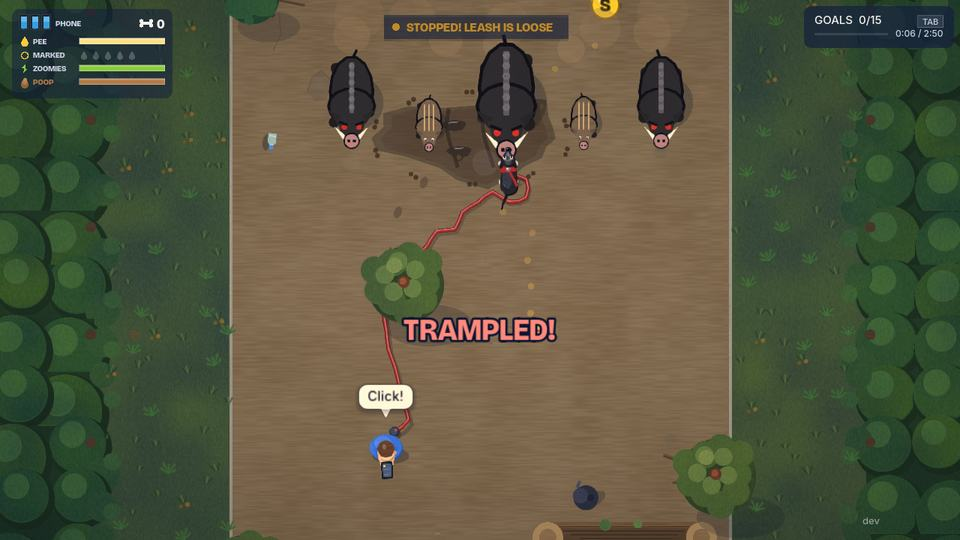
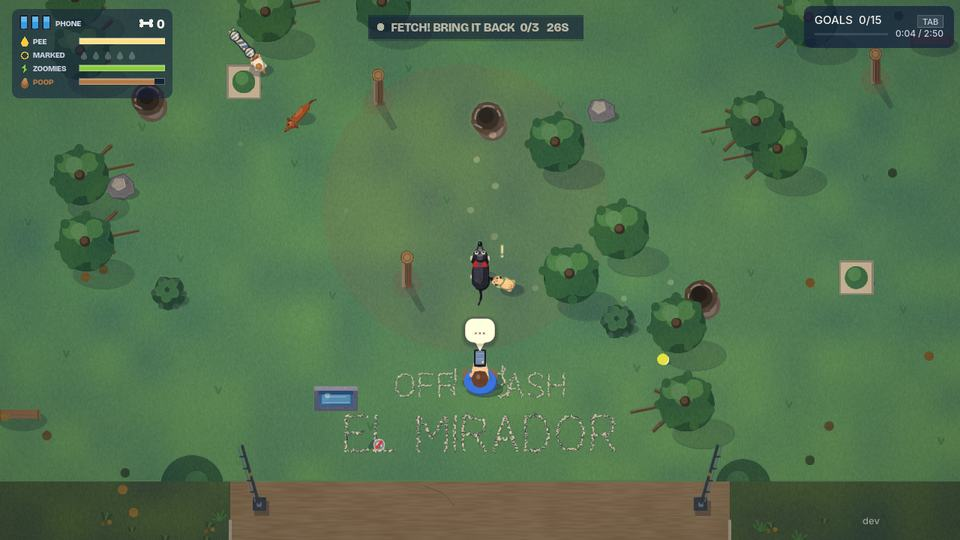

Els Senglars
A wild Collserola downhill
Down through Collserola's holm oaks, wallows and forest scrub toward El Mirador. Wild mountain boars root along the ditch outside the park edge and burst onto the path behind you to escort your pair straight back to town.
- Off-leash stop
- EL MIRADOR (Fenced dog yard)
- Beat the clock
- Under 2:50
- Turnaround warning
- WILD BOARS! WATCH OUT!
Screenshots





Goals (15)
- Mark 5 spots
- Have 4 good long sniffs
- Get the phone home without a scratch
- Get yourself home without a bump
- Get your business bagged
- Bring the ball back 3 times
- Scarf down 2 dropped snacks
- Stay a leash length ahead of the boars
- Charge through 3 boar wallows
- Pole-swing around 2 holm oaks
- Land an x3 trick combo
- Find the golden acorn on the trail
- Spell LEASH
- Find the hidden pernil
- Beat the clock (under 2:50)